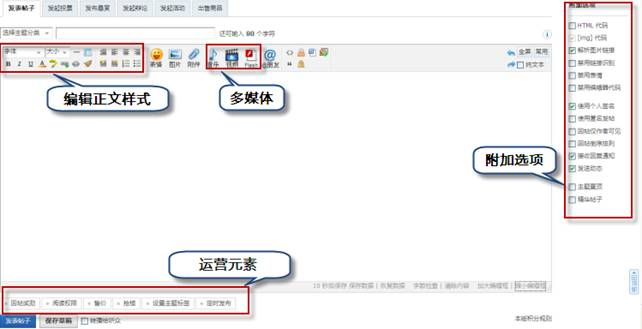
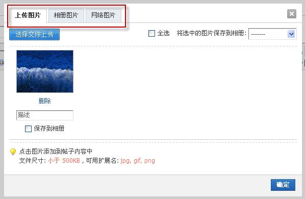
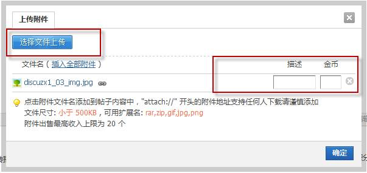
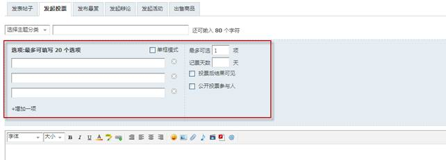
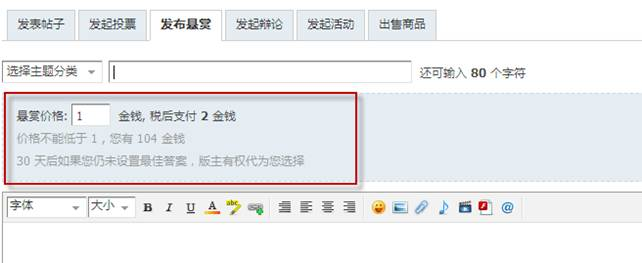
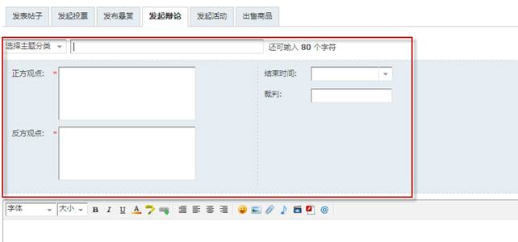
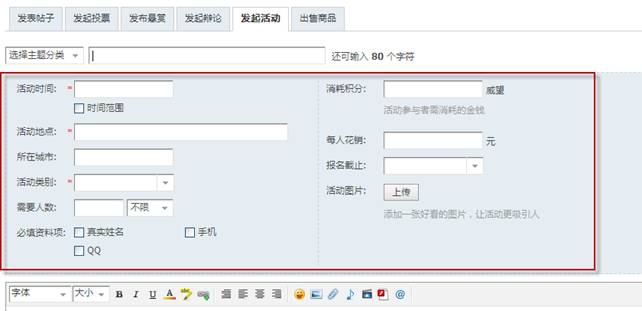
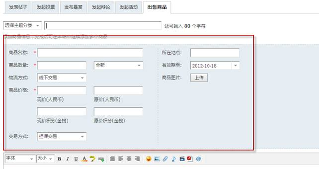

发表主题
发表主题是论坛的最基本功能，系统共提供了普通主题和特殊主题两类主题供发表，普通主题是所有允许发帖版块都允许发表的主题类型，特殊主题包括：投票主题、悬赏主题、辩论主题、活动主题、商品主题五种，若要允许发表特殊主题需在后台设置。
在登录状态下点击发帖，进入发帖页面，填写帖子标题、内容，编辑内容的样式，设置附加选项和运营元素，完成后发表即可。下面我们来详解各个过程中元素的使用方法和注意事项：
一、普通主题:
帖子标题：限长 80字节，输入时有字数检测提示
帖子正文：文本输入支持 bbcode
图片：向帖子内插入图片，分三种模式（默认项是上传图片）
上传图片，点击选择文件上传，选择自己要上传的文件，点击上传（多张可继续添加上传），即可看到上传图片的缩略图，然后填写描述，选择是否保存到相册（可以创建并保存到新相册）；点击图片将图片插入到文本框内，可对图片位置进行调整，若上传完成点击确定，提交帖子后图片将出现在帖子尾部，按上传顺序排列；相册图片：从用户自己的相册内选择图片，点击添加到帖子内；网络图片：填写图片地址，宽高（可选）提交即可向帖子内添加网络图片；
附件：在此可以给帖子添加附件，点击选择文件上传，选择要上传的附件，点击上传，
上传后可以给附件添加描述与阅读权限以及金钱；
表情：向帖子中添加表情，点击表情添加到编辑框内即可；
多媒体：如果帖子需要插入音乐、视频等多媒体元素，点击相应图标，输入网址，设置宽高提交即可；
互动元素：@好友、转播给听众（发帖同时转播给听众，系统会给听众发提醒，通过提醒链接到该帖）、发送动态（发帖同时在动态中发表一条相关的动态）；
运营元素：回帖奖励（设置回帖奖励，当回复时给回帖者一定的扩展积分奖励），阅读权限（设置有指定阅读权限的用户才可浏览）， 售价（设置售价后将隐藏主题内容，浏览者购买后才能看到）， 抢楼 （发表抢楼主题）， 定时发布（指定发帖时间，到时间后自动发布）；
设置主题标签：标签是主题横向关联的工具，可以将主题按标签归类，同时可以根据标签快速搜索到相关内容，可自己填写主题标签、自动获取或是选择标签来设置主题标签；
二、特殊主题
在允许发布特殊主题的版块，用户可以发布特殊主题，点击发帖，选择要发表的类型，填写、设置各项，发表即可
1、投票主题：根据需求，填写选项（若勾选单框模式后，将会只有一个输入框输入选项，每行一条，最多20条）、设置最多可选项、设置计票天数、设置投票后结果是否可见，是否公开投票参与人，输入其他要说明的内容，编辑提交即可；
2、悬赏主题：发帖人可以设置悬赏价格，当其他用户回复此悬赏后，发帖人可以将符合自己需求的答案设置为最佳答案，被设置为最佳答案的用户将获得相应的金钱，同时发帖人会减去相应金钱；
3、辩论主题：
输入正方观点、反方观点、设置辩论结束时间、指定裁判，发起辩论后，用户可以根据自己的观点支持、加入正方或是反方；裁判可以根据辩论情况，结束辩论；
4、活动主题：输入活动名称、选择活动时间、地点、类别、人数、消耗积分、每人花销、设置报名截至时间、上传活动图片、设置资料必填项，输入活动内容编辑提交即可发起活动；活动发起后，用户在浏览活动时，可以申请加入活动；发起活动者，也可以向好友发送邀请，邀请好友来参加活动；管理：发起活动者，可以对申请者进行批准、需完善、拒绝参加活动的管理，还可以发送活动通知；
5、商品主题：根据需求，填写商品名称、商品数量、全新/二手、物流方式、商品价格、交易方式、所在地点、有效期、商品图片，输入其他需要说名的内容，编辑提交即可；
